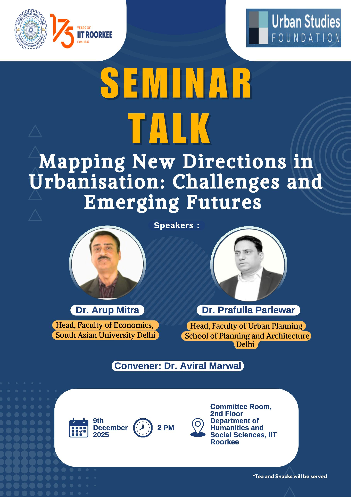

Seminar · 9 December 2025, 2 PM
Mapping New Directions in Urbanisation: Challenges and Emerging Futures
A seminar talk bringing together an urban economist and an urban planner to take stock of how Indian urbanisation is changing — the pressures on cities, the policy directions emerging in response, and the research questions that follow.
Dr. Arup Mitra — Head, Faculty of Economics, South Asian University, Delhi
Dr. Prafulla Parlewar — Head, Faculty of Urban Planning, School of Planning and Architecture, Delhi
Committee Room, 2nd Floor, Department of Humanities & Social Sciences, IIT Roorkee
Convener: Dr. Aviral Marwal · Supported by the Urban Studies Foundation